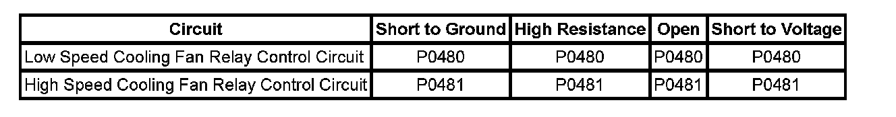

P0481
DTC P0480 or P0481
Diagnostic Instructions
^ Perform the Diagnostic System Check - Vehicle prior to using this diagnostic procedure. Initial Inspection and Diagnostic Overview
^ Strategy Based Diagnosis for an overview of the diagnostic approach.
^ Diagnostic Procedure Instructions provide an overview of each diagnostic category.
DTC Descriptor
DTC P0480
Cooling Fan Relay 1 Control Circuit
DTC P0481
Cooling Fan Relay 2 Control Circuit
Diagnostic Fault Information

Circuit/System Description
The engine control module (ECM) commands the fans ON in either high speed or low speed, depending on cooling requirements. In low speed, the fans are configured in series. In high speed, the fans are configured in parallel.
In low speed operation, the ECM applies ground to the coil side of the fan low relay. Voltage is applied directly to the left cooling fan through the switch side of the fan low relay, which is fed by the fan 1 fuse. The right fan is connected in series to the left fan through the de-energized fan control relay so that both operate at low speed.
In high speed operation, the ECM applies a ground to the coil side of the fan low relay, the fan control relay, and the fan high relay. Voltage is applied directly to the right cooling fan through the switch side of the relay, which is fed by the fan 2 fuse. The left cooling fan obtains voltage through the fan low relay and ground through the fan control relay.
The ECM monitors the low and high speed cooling fan relay control circuits for the following conditions:
^ Short to ground
^ Short to voltage
^ An open circuit
If the ECM detects an improper voltage level on the low or high speed ECM driver circuits, then DTC P0480 or P0481 will set and the affected ECM driver will be disabled.
Conditions for Running the DTC
^ The battery voltage is between 9-18 volts.
^ The engine speed is greater than 400 RPM.
Conditions for Setting the DTC
^ The commanded state of the output driver module (ODM) and the actual state of the control circuit do not match.
^ The condition is present for more than 5 seconds.
Action Taken When the DTC Sets
DTCs P0480 and P0481 are Type B DTCs.
Conditions for Clearing the MIL/DTC
DTCs P0480 and P0481 are Type B DTCs.
Diagnostic Aids
^ This test procedure requires that the vehicle battery has passed a load test and is completely charged. Refer to Battery Inspection/Test. Battery Inspection/Test
^ When disconnecting electrical connectors or removing fuses and relays from a fuse block, always inspect the component electrical terminals for corrosion and the mating electrical terminals for tightness.
^ Use the J 35616 for any test that requires probing the underhood fuse block terminals, component wire harness terminals, or the ECM wire harness connector terminals.
Reference Information
Schematic Reference
Engine Cooling Schematics
Connector End View Reference
^ Cooling System Connector End Views
^ Electrical Center Identification Views
^ Engine Control Module Connector End Views
^ Cooling System Component Views
Description and Operation
Cooling Fan Description and Operation
Electrical Information Reference
^ Circuit Testing
^ Connector Repairs
^ Testing for Intermittent Conditions and Poor Connections
^ Wiring Repairs
DTC Type Reference
Powertrain Diagnostic Trouble Code (DTC) Type Definitions
Scan Tool Reference
^ Scan Tool Data List
^ Scan Tool Data Definitions
^ Scan Tool Output Controls
Special Tools Required
^ J 43244 Relay Puller Pliers
^ J 35616 GM Approved Terminal Test Kit
Circuit/System Verification
1. Ignition ON, command the cooling fan relay 1 ON and OFF several times using the scan tool output control function. You should hear both fans turn ON and OFF. Both should run on low speed when turned ON.
2. Ignition ON, command the cooling fan relays 2 and 3 ON and OFF several times using the scan tool output control function. When turned ON, the right fan should run on high and the left fan should remain OFF.
3. Ignition ON, command the cooling fan relays 1, 2, and 3 ON and OFF several times using the scan tool output control function. When turned ON, both fans should run on high speed.
Circuit/System Testing
P0480
1. Ignition OFF, disconnect the cooling fan low relay from the underhood fuse block.
2. Ignition ON, verify that a test lamp illuminates between the fan low relay coil voltage supply circuit and ground.
^ If the test lamp does not illuminate, test the fan low relay coil voltage supply circuit for and open/high resistance.
3. Connect a test lamp between the fan low relay coil supply voltage circuit and the fan low relay coil control circuit. With a scan tool, command the fan relay 1 ON and OFF. Verify that the test lamp turns ON and OFF with each command.
^ If the test lamp remains illuminated with each command, test the relay coil control circuit for a short to ground. If the circuit tests normal, replace the control module.
^ If the test lamp does not illuminate, test the relay coil control circuit for and open or a short to voltage. If the circuit tests normal, replace the control module.
4. If the circuits test normal, replace the fan low relay.
P0481
1. Ignition OFF, disconnect the cooling fan high relay from the underhood fuse block.
2. Ignition ON, verify that a test lamp illuminates between the fan high relay coil voltage supply circuit and ground.
^ If the test lamp does not illuminate, test the fan high relay coil voltage supply circuit for and open/high resistance.
3. Connect a test lamp between the fan high relay coil supply voltage circuit and the fan high relay coil control circuit. With a scan tool, command the fan relays 2 and 3 ON and OFF. Verify that the test lamp turns ON and OFF with each command.
^ If the test lamp remains illuminated with each command, remove the fan control relay and retest. If the test lamp now turns ON and OFF with the fan control relay removed, replace the fan control relay. If the test lamp still remains illuminated when commanded ON and OFF, test the fan high relay coil control circuit for a short to ground. If the circuit tests normal, replace the control module.
^ If the test lamp does not illuminate, test the fan high relay coil control circuit for and open or a short to voltage. If the circuit tests normal, replace the control module.
4. If all circuits test normal, replace the fan high relay.
Repair Instructions
Perform the Diagnostic Repair Verification after completing the diagnostic procedure. Verification Tests
^ Relay Replacement (Attached to Wire Harness) Relay Replacement (Within an Electrical Center)
^ Underhood Electrical Center or Junction Block Replacement
^ Control Module References for ECM replacement, setup, and programming